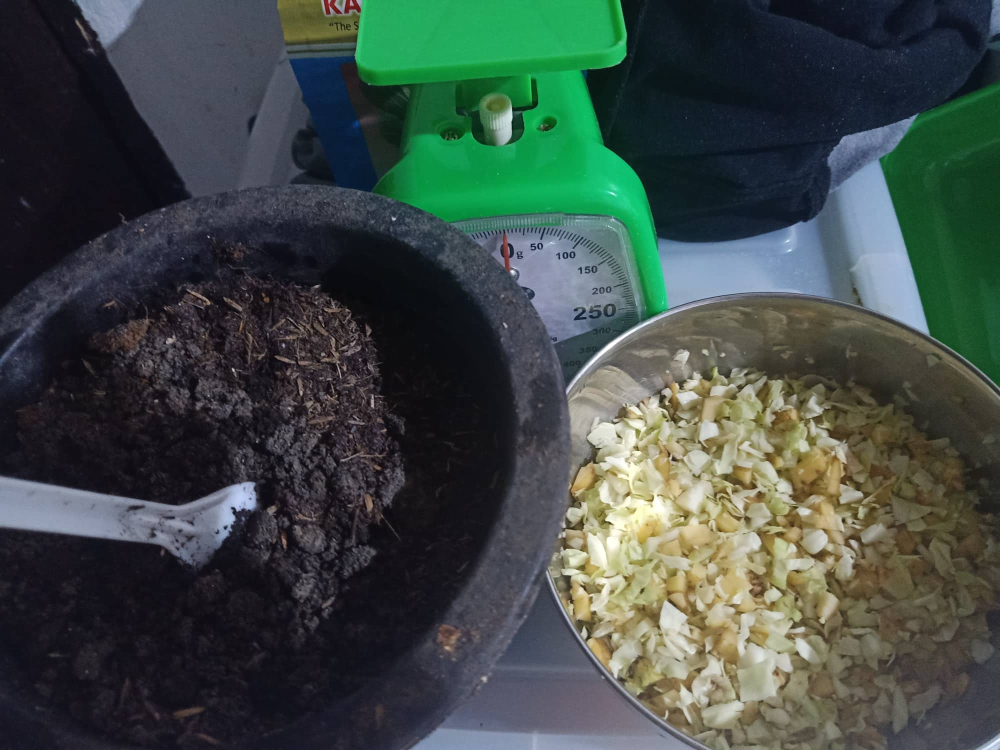
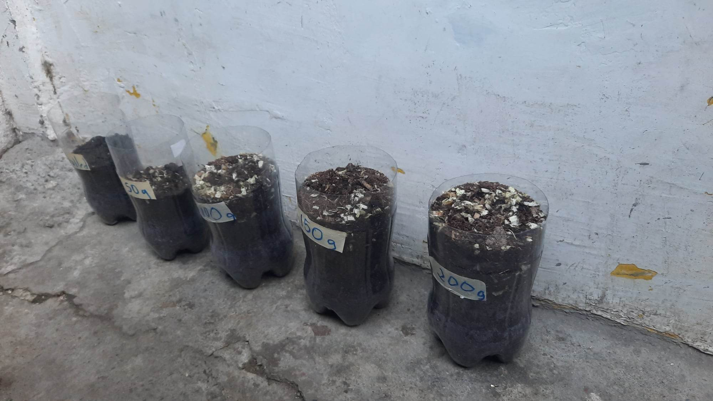
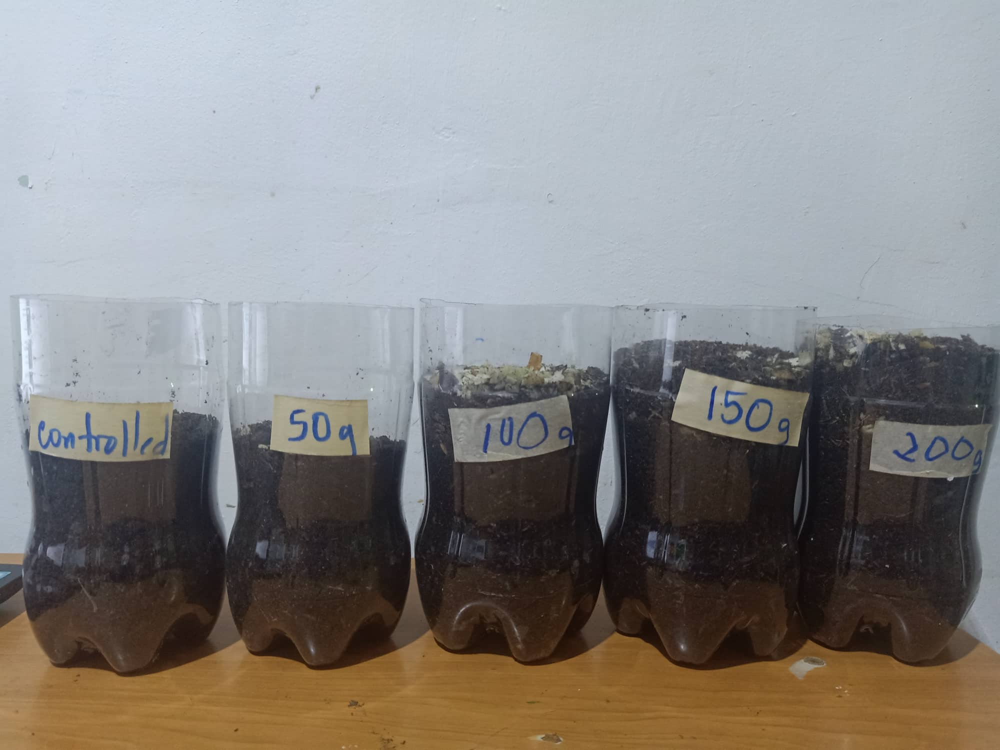
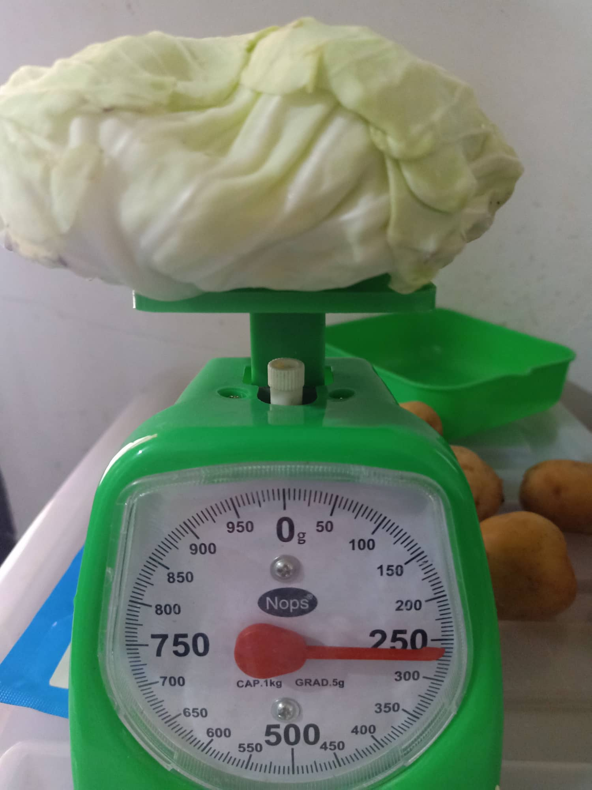
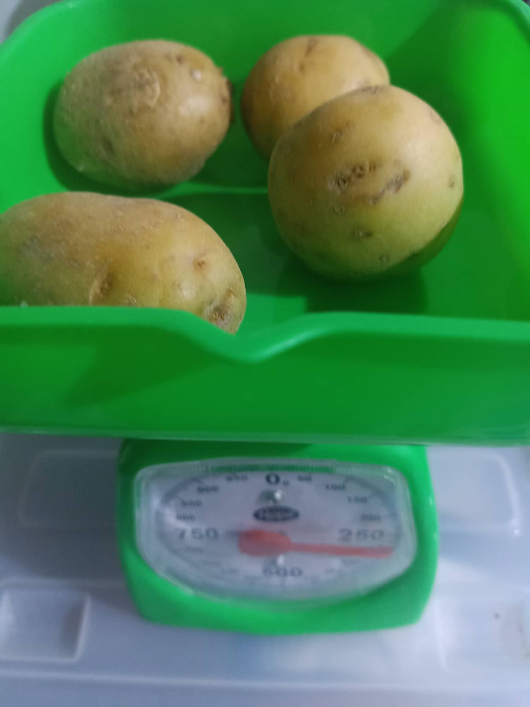

Science Investigatory Project Research Proposal and Setup Documentation
The Effect of Potato and Cabbage Compost on Pechay
Composting is very valuable in the environment because it promotes cleanliness by using organic and natural compost instead of artificial fertilizer, and also reduces greenhouse gas emissions, like methane, which helps fight climate change. It is helpful for the community because it also promotes gardening to people, which supports local food production and enhances the community soil.
Will cabbage and potato compost affect the growth of seedlings?
If cabbages and potatoes are used as compost, the pechay seedlings will grow faster.
Composting is a process in which organic materials are used to give the needed nutrients to the soil, and provide good conditions for the plant to grow in. Nutrients such as potassium, phosphorus, and nitrogen are essential for plant growth, which is why it must be present in the soil the plants will grow in. We picked potatoes and cabbage as our compost because they have these three nutrients that will help the pehchay plant grow with the needed from the soil.
Hu, S. (n.d.). Composting 101. NRDC. https://www.nrdc.org/stories/composting-101
-This site helps in telling us why composting is important, the different forms of composting, and many more that can help beginners in their composting journey.
Composting At Home. (2022, July 7). US EPA. https://www.epa.gov/recycle/composting-home
-This site helps us by teaching us the ways how to start basic, but effective, composting at home.
Top five reasons to compost. (n.d.). ACSWMD. https://www.addisoncountyrecycles.org/food-scraps/composting/101/why-compost
-This site gives us the top reasons why we have to compost. One of these reasons is that we are giving back nutrients to the soil.
Admin T. (2022 , June 25)Best Fertilizer For Pechay. Justagric. Retrieved September 24, 2022, from
https://justagric.com/best-fertilizer-for-pechay/amp/
-This tells us that the best fertilizer for pechay is when it contains nutrients such as nitrogen, phosphorus, and potassium. Giving it’s vibrant green while also improving the pechay’s growth.
Fertilizer, T. (2020, December 27). How and when to fertilize pechay. Fertilizerfor.
https://fertilizerfor.com/pechay/
-This site is described with steps and with detailed information on how to properly fertilize your pechay plant to get the best results.
How to Grow Organic Pechay – Gardenia Organic Pechay. (2022, September 1).
https://gardeniaorganic.com/how-to-grow-org
-Tells us the things to remember when growing pechay, plus the things to maintain.
How does Nitrogen Help Plants Grow? (2013, May 7). Phoslab Environmental Laboratories.
https://www.phoslab.com/how-does-nitrogen-help-plants-grow/
-Why the nitrogen element should be found in fertilizers when you want to grow a plant, as nitrogen is notably known to be found in healthy soil.
Rhoades, H. (2021, June 17). The Importance Of Phosphorus In Plant Growth. Gardening Know How.
https://www.gardeningknowhow.com/garden-how-to/soil-fertilizers/phosphorus-plant-growth.htm
-Even with the importance it lists down in the site like how it improves a plant’s growth, this site also tells us on how to balance out phosphorus levels as too much phosphorus may cause more harm than good.
How does Potassium Help Plants Grow? (2019, February 5). Phoslab Environmental Laboratories.
https://www.phoslab.com/how-does-potassium-help-plants-grow/
-This site tells us that potassium contains nutrients that are so crucial to a plant’s growth. Even resisting drought after a certain period of time of not attaining water.
- Cromell, C. & The National Gardening Association. (2016, March 26). NitrogenRich Materials for Your Compost Pile. Dummies.
https://www.dummies.com/article/home-auto-hobbies/garden-green-living/sustainability/composting/nitrogen-rich-materials-for-your-compost-pile-188766/
-This site lists down more things that can be alternatives to use other than just fruits and veggies for your compost pile.
Can I compost cabbage? (n.d.). Can I Compost This?. https://www.compostthis.co.uk/cabbage
-Says that cabbage is a good component to add in composting as it breaks down and rots quickly in the soil, making the process a bit faster.
Can potato peels go in compost – Tips on adding potato peels to compost piles. (2020, March 31). Gardening Know How. https://www.gardeningknowhow.com/composting/ingredients/composting-potato-peelings.htm
-Expresses the dangers to be aware of when composting potato peels as if done wrong, you will be growing a fungal infection instead, and not the plants you want.
-9 Impressive Health Benefits of Cabbage. (2017, November7). Jillian Kubala, MS, RD - https://www.healthline.com/nutrition/benefits-of-cabbage
-Informs us that eating cabbage can help prevent heart problems.
-Health Benefits of Potatoes. (2020, September17). Dan Brennan, MD. https://www.webmd.com/diet/health-benefits-potatoes
-Potatoes can help maintain blood sugar and cholesterol levels in place.
-Benefits of Cabbage. (2020, September11). Christine Mikstas, RD, LD. https://www.webmd.com/food-recipes/ss/slideshow-cabbage-benefits
-Cabbage compacted with nutrients, being easy to eat and to grow.
Composting for a Vegetable Garden- (2022, September 27). Burrell C.C. https://home.howstuffworks.com/composting-for-a-vegetable-garden.htm
-This site tells us that if you ever want to start a garden, you have to know how to properly compost as it can help you save some money along the way as you are not spending every month in buying new fertilizer.
Waller, J. D. (2020, September 16). The 20 Best Sources of Fiber, Your Diet’s Unsung Hero. The Beet.https://thebeet.com/the-20-best-sources-of-fiber-your-diets-unsung-hero/
-Good health benefits obtained from fiber, preventing health problems if present in everyday diet.
Composting At Home. (2022, July 7). US EPA. https://www.epa.gov/recycle/composting-home
--This site helps us by teaching us the ways how to start basic, but effective, composting at home.
-Home Composting - Turn Your Spoils into Soil. (n.d.). CT.gov - Connecticut’s Official State Website. https://portal.ct.gov/DEEP/Waste-Management-and-Disposal/Organics-Recycling/Home-Composting---Turn-Your-Spoils-into-Soil
-Tells us on remembering waste management when doing composting.
Bertels BV. (n.d.). Pros and cons of growing plants outside. https://www.plagron.com/en/grow-topics/pros-and-cons-of-growing-plants-outside
-Helps us to remember why growing plants outside is important, while knowing whats to maintain too prevent pests in getting and eating your plant.
How to Grow Organic Pechay – Gardenia Organic. (2022b, September 1). https://gardeniaorganic.com/how-to-grow-organic-pechay/
--Tells us the things to remember when growing pechay, plus the things to maintain.
    
Erwin Gabriel Gordo, also known as EG, is a student in Ateneo De Davao University Junior High. He is a coder for Group 3A of 9 - Berchmans. He tries to take his time and do whatever it takes to improve on his projects and/or work. Although he struggles sometimes in coding with CSS, he always has his helpful and vibrant groupmates. He is also very shy and introverted, and doesn't talk much.